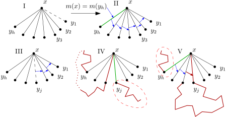
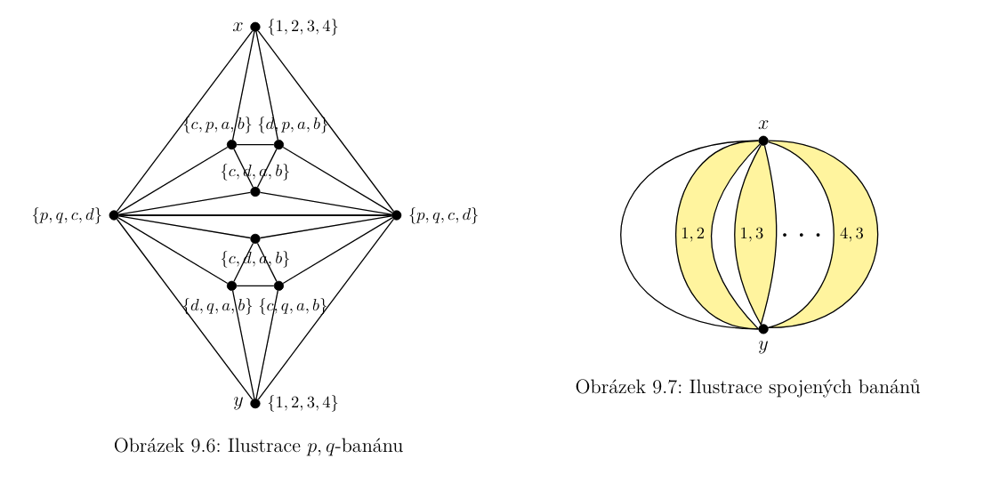

Teorie grafů
Drobnosti v přednáškách AG1:
- handout přednášky 3, strana 14 ↗, nešťastně se v obrázku překrývají značení startu a cíle s čísly BFS průchodu
- handout přednášky 4, strany 7 ↗ a 11 ↗, obrázky úplně zničený
- handout 11, strana 23 ↗; To, že O(m log m)=O(m log n) je sice pravda, ale úplně stejnou úpravou můžu u Jarníka napsat, že je O(m log m). Tato úprava mi přijde předčasná a matoucí. Dává smysl aby se promítla až ve finální verzi složitosti, kde je započítaný i Union-Find.
- Handout, přednáška 12, strana 16, rozbitý obrázek
- Handout, přednáška 12, strana 43, rozbitý obrázek
- GAK překlep “reprezentující hrany s oběma kopie koncových vrcholů”
Zdroje
- Přednášky předmětů BI-AG1, BI-AG2
- Materiály k MI-GAK
- Modern Graph Theory - Bollobas
- Graph Theory - Diestel
- Parametrized Algorithms (modrá knížka)
- (Wikipedie)
Teorie grafů a kombinatorika
Grafové modely ?
Kolář: “To bývalo jakési motivační téma, které ukazovalo přehršli “problémů z praxe”, které se daly formulovat jako grafový problém a řešit nějakým grafovým algoritmem.”
Výpočetní modely
Výpočetní model RAM (Random Access Machine) obsahuje
- Paměť: celočíselné paměťové buňky adresované celými čísly,
- Program: konečná posloupnost sekvenčně prováděných instrukcí,
- Instrukce: Aritmeticko-logické mají za argumenty konstanty / adresy / nepřímé adresy; Řídicí jsou skoky, podmíněné skoky, zastavení programu.
Časová složitost je maximum instrukcí přes možné vstupy. Paměťová složitosti je maximum z počtu použitých poměťových buněk přes všechny vstupy.
Neorientované grafy, Sousednost, Souvislost
Neorientovaný graf je uspořádaná dvojice $(V,E)$, kde $V$ je neprázdná konečná množina vrcholů, a $E$ je množina hran, tj. neuspořádaných dvojic vrcholů. Vrcholy, které jsou spojeny hranou nazveme sousední. Pokud hrana obsahuje vrchol, pak jsou navzájem incidentní.
Stupeň vrcholu $deg(v)$ je počet jeho sosuedů. Otevřené okolí $N(v)$ je množina sousedů v. Uzavřené okolí $N[v] = N(v) + v$.
Typické grafy: $K_n$ úplný, $K_{n,m}$ úplný bipartitní (k-partitní), $P_n$ cesta, $C_n$ kružnice, $S_n$ hvězda.
Doplněk grafu je, že prohodíme hrany a nehrany.
Graf je souvislý, pokud existuje cesta mezi každou dvojicí jeho vrcholů. Každý v inkluzi maximální souvislý pograf tvoří komponentu souvislosti.
Další pojmy
- Izolovaný vrchol: Vrchol stupně 0
- Princip sudosti: součet stupňů všech vrcholů je roven 2 krát počtu hran, $\sum_{v\in V}deg(v) = 2|E|$
- Podgraf: Graf H je podgrafem G, když $V(H) \subseteq V(G)$ a $E(H) \subseteq E(G)\cap 2^{V(H)}$
- Indukovaný pograf G[V’]: $V’=V(H) \subseteq V(G)$, ale $E(H)=E(G) \cap 2^{V(H)}$ (hrany se nevybírají)
- Klika: podmnožina vrcholů, kde jsou všechny po dvojicích sousední
- Nezávislá množina: podmnožina vrcholů, kde po dvojicích žádné nejsou sousední
Reprezentace grafů
- graf (obrázek, viz vizualiace grafů)
- matice sousednosti: $N \times N$ matice, 1 na místech sousedích vrcholů, 0 všude jinde
- matice incidence: $N \times M$ matice, 1 na místech incidentních vrcholů a hran, 0 všude jinde
- seznam sousedů: u každého vrcholu máme seznam jeho sousedů – vhodné pro většinu aplikací (nejkratší cesty, kostry, toposort, barvení)
- seznam incidentních hran: u každého vrcholu máme seznam incidentních hran, sousedi mohou ukazovat buď na stejnou instanci, nebo svoji instanci, která je se sestrou nějak propojená – vhodné pro mnoho pokročilých aplikací (toky, párování)
Vážený graf (nebo hranově ohodnocený) je rozšíření grafu o váhovou funkci $w:E \rightarrow R$, která přiřazuje každé hraně reálné číslo. Váha podgrafu G je potom součet vah všech jeho hran.
Věta o souboru stupňů: (sestupně seřazená) posloupnost $(D_1,D_2,\dots,D_N)$ je soubor stupňů nějakého grafu právě tehdy, když $(D_2-1,D_3-1,\dots,D_{(1+D_1)}-1, D_{(2+D_1)},\dots,D_N)$ je soubor stupňů nějakého grafu.
Izomorfismus
Grafy G a H jsou izomorfní, právě když existuje bijekce $F : V(G) \rightarrow V(H)$ taková, že $$ {u,v} \in E(G) \Leftrightarrow {F(u),F(v)} \in E(H). $$
Automorfismus je izomorfismus kde $G=H$.
Izomorfismus grafů je obsažen ve třídě GI ↗ (graph isomorphism). Zároveň je ve třídách NP and co-AM ↗.
- V NP je proto, že ano-certifikát je výsledné mapování vrcholů, které lze jednoduše ověřit.
- (ověřit:) V co-AM je proto, že lze protokolem ověřit, že někdo umí tento problém řešit rychle. Konkrétněji: pošleme mu grafy A,B,C a má odpovědět, jestli je A isomorfní s B či C. To, že umí GI řešit lze ověřit opakovaným ptaním, s přepermutovanými vrcholy, a obmněněným třetím grafem.
Při implementaci se můžeme omezit na srovnávání pouze těch vrcholů, které sdílejí všechny vlastnosti.
- stupeň
- soubor stupňů sousedů
- souvislá komponenta, 2-souvislá, 3-souvislá komponenta
Orientované grafy, Silná souvislost
Orientovaný graf je uspořádaná dvojice $(V,E)$, kde $V$ je neprázdná konečná množina vrcholů, a $E$ je množina orientovaných hran, tj. uspořádaných dvojic vrcholů.
Typické grafy: orientovaná cesta, orientovaná kružnice, zakořeněný strom
Stupeň vrcholu $deg(v)$ je počet všech incidentních hran. Vstupní stupeň vrcholu $deg^+(v)$ je počet příchozích hran a výstupní stupeň $deg^-(v)$ je počet odchozích hran, a zřejmě $deg^+(v) + deg^-(v) = deg(v)$.
Definice pro vstupní okolí (předchůdci), výstupní okolí (následníci), a okolí grafu jsou jasné (jsou to podmnožiny sousedství).
- Zdroj: vrchol se vstupním stupněm 0
- Stok: vrchol s výstupním stupněm 0
- Izolovaný vrchol: má stupeň 0
- Podgraf, Indukovaný podgraf a izomorfismus funguje stejně jako u neorientovaných.
Symetrizace udělá z orientovaného grafu neorientovaný tak, že nahradí orientované hrany za neorientované hrany (a vyhodí případné duplikáty).
Orientace neorientovaného grafu je když z neorientovaných hran uděláme nějakým definovaným způsobem orientované.
Orientovaný graf je slabě souvislý, když je souvislá jeho symetrizace. Orientovaný graf je silně souvislý, když pro každou dvojici vrcholů $u,v$ existuje orientovaná cesta z $u$ do $v$.
Hledání silně souvislých komponent lze udělat pomocí odtrhávání stokových komponent. Vzhledem k tomu, že poslední uzavřený vrchol DFS (které pouštíme postupně ze všech nenavštívených vrcholů) je vždy ve zdrojové komponentě, tak můžele toto DFS pustit na grafu s obrácenými hranami a najít tak stokovou komponentu. Ve stokové komponentě pustíme DFS abychom našli všechny dostupné vrcholy, což jsou vrcholy oné komponenty. Tuto komponentu smažeme (uložíme stranou) a opakujeme. Výhodou je, že když máme uloženy pořadí uzavírání vrcholů z prvotního DFS, tak ho nemusíme pouštět stále dokola, ale stačí procházet odzadu a vždy vybrat poslední nesmazaný vrchol.
Kondenzování silně souvislých komponent nám nutně dá DAG.
Prohledávání grafu do hloubky (DFS) a do šířky (BFS)
Algoritmy prohledávání grafu procházejí graf po vrcholech a hranách, aby o grafu něco zjistili. Hlavním způsobem odlišení algoritmů je pořadí ve kterém procházejí vrcholy.
Depth-first search (DFS)
všechny vrcholy označ jako nenavštívené
navštiv startovní vrchol
funkce navštiv vrchol u:
označ v jako otevřený
pro v z N(u):
pokud je v nenavštívený:
voláme funkci navštiv vrchol v
označ v jako uzavřený
Chování algoritmu je trochu jiné pro orientované a neorientované grafy.
Pro neorientované grafy můžeme procházet hrany (do sousedů) v obou směrech. Průchod navštíví celou souvislou komponentu. Proto se často DFS pouští postupně na všechny vrcholy, které jsou nenavštívené Hrany můžeme během průchodu označovat podle situace, ve které jsme je prošli, získáme tak:
- stromové (hlaví průchod, navštívení do teď nenavštívených vrcholů) a
- zpětné (navštívení již projitých vrcholů).
U orientovaných grafů bereme N(v) pouze ty sousedy, do kterých z u vede orientovaná hrana. Průchod navštíví všechny vrcholy, které jsou dosažitelné z u. (Navštíví souvislou komponentu u, a všechny souvislé komponenty dostupné z komponenty u.) Opět lze klasifikovat hrany:
- stromové (hlavní průchod, navštívení do teď nenavštívených vrcholů),
- zpětné (navštívení otevřených vrcholů),
- dopředné (navštívení již uzavřených vrcholů, které jsme otevřeli po našem) a
- příčné (navštívení již uzavřených vrcholů, které jsme otevřeli před naším).
Časová složitost je $O(|V|+|E|)$ a používá $O(|V|)$ paměti navíc.
Breadth-first search (BFS)
všechny vrcholy označ jako nenavštívené
vytvoř prázdnou frontu
přidej do fronty startovací vrchol
označ startovací vrchol jako otevřený
dokud není fronta prázdná:
vyjmi první vrchol u z fronty
označ u jako uzavřený
pro v z N(u):
pokud je v nenavštívený:
označ v jako otevřený
přidej v do fronty
Algoritmus hledá nejkratší cestu z u do všech ostatních vrcholů, co se počtu hran týče.
Časová složitost je $O(|V|+|E|)$ a používá $O(|V|)$ paměti navíc.
Lexicographic breadth-first search (LexBFS)
Obecnému BFS je jedno, v jakém pořadí projde prvky z jedné vlny. Pro rozhodování těchto remíz lze použít řadu pravidel – nejjednodušší je pro sousedy jednoho vrcholu vzít pořadí seznamu sousedů z reprezentace grafu, a potomci z jedné vlny jsou zpracováni v pořadí kdo dřív přijde, ten dřív mele.
LexBFS rozhoduje remízy tak, že se podívá kdo má za souseda vrchol, který byl v pořadí odebrání dříve, a při opětovné remíze kouká na druhého souseda, atd.
Topologické uspořádání
Topologické uzpořádání orientovaného grafu je takové pořadí vrcholů, že pro každou hranu (u,v) platí, že u je v uspořádání před v. Zjevně neexistuje, pokud má graf cyklus, proto se bavíme pouze o orientovaných grafech bez cyklů (DAG).
Lze najít buď odřezáváním zdrojů, nebo obrácením pořadí uzavírání vrcholů v DFS (vrcholy bez odchozí hrany jsou v daném kroce stoky).
Počítání, kolik má graf topologických uspořadání je #P-complete, takže pro obecný graf se jedná o problém, který neumíme efektivně řešit. Pro malé grafy (max tak 20 vrcholů) lze projít všechny možnosti (s prořezáváním), případně zkusit urychlit přes DP na podmnožiny.
Mosty, artikulace a 2-souvislost
Most je hrana, kterou když odstraníme, tak se zvýší počet souvislých komponent Hrana je most právě tehdy, když neleží na žádné kružnici.
Mosty můžeme najít pomocí DFS tak, že si při průchodu pamatujeme nejnižší ID vrcholu, který jsme viděli. Pokud při uzavírání vrcholu nám synové vrátili, že já jsem nejvyšší vrchol, který viděli, tak hrana ode mě nahoru je most. Pokud synové vrátili vrchol, který je víš, tak vim, že existuje hrana z mého podstromu do vrcholu nademnou, a proto hrana ode mě nahoru není most.
Artikulace je vrchol, který když odstraníme, tak se zvýší počet souvislých komponent
Graf je (vrcholově) 2-souvislý, pokud neobsahuje artikulaci. (A je hranově 2-souvislý, pokud neobsahuje most.) Každý 2-souvislý graf lze vytvořit z kružnice přidáváním uší (napojení koncú nové cesty do dvou různých vrcholů grafu).
2-souvislá komponenta je v inkluzi maximální 2-souvislý pograf. Dekompozice grafu na 2-souvislé komponenty lze udělat v lineárním čáse pomocí DFS. Artikulace je vrchol, který je ve více jak jedné 2-souvislé komponentě. Most je každá 2-souvislá komponenta obsahující 2 vrcholy.
Více o k-souvislosti v oddílu o tocích.
# Barevnost
$k$-obarvení grafu je funkce $c:V(G) \rightarrow {1,\dots,k}$, tj. obarvení vrcholů $k$ barvami, takové, že ${u,v}\in E(G) \implies c(u) \ne c(v)$. Barevnost grafu $\chi(G) = \min k$ pro které existuje $k$-obarvení grafu $G$.
Najít nejmenší počet barev pro dobré obarveni grafu je NP-úplný problém.
Věta o čtyřech barvách: Každý rovinný graf lze obarvit čtyřmi barvami. (Nemáme rozumný důkaz, pouze samé šílenosti. :D )
Věta o pěti barvách: Každý rovinný graf lze obarvit pěti barvami. Lze dokázat hned několika způsoby, jeden z nich předvedeme:
Brooksova věta: pokud souvislý G není lichý cyklus ani klika, tak platí, že barevnost(G) $\le$ největší stupeň(G).
- Pokud Kv(G)=3, G není klika, proto obsahuje indukovanou cestu na 3 vrcholech (třešničku) s vrcholy v pořadí x,z,y. V G bez x,y existuje kostra (z 3-souvislosti), uděláme dfs z vrcholu z, pak toposort, abychom získali pořadí takové, kde má každý vrchol jednu hranu ‘doprava’. Přidáme x a y na začátek. First-Fit obarví x a y stejně, pak použije ne víc jak max stupeň barev, protože vždy jeden soused není obarven (ten vpravo), z může taky obarvit, protože barva x a y je stejná.
- Pokud Kv(G)=2, tak existuje {x,y} řez, přidáme hranu {x,y} a vyřešíme komponenty nezávisle, jednu přebarvíme tak, aby se na {x,y} rovanly a šli tak spojit do jedné. Přidání hrany nezvýší max stupeň v podkomponentách, protože aby mohly být {x,y} v řezu, tak musí mít alespoň jednu hrany do obou komponent.
- Pokud Kv(G)=1, tak má artikulaci, rozpojíme komponenty dle artikulace, a obarvíme zvlášť, přepermutujeme barvy a spojíme. Pokud nějaká komponenta je klika či lichá kružnice, tak pozorujeme, že spojením se zvýší stupeň ale ne obarvení komponenty. ■
Hadwigerova doměnka: Pokud graf nemá $K_t$ jako minor, pak jeho barevnost je ostře menší než $t$.
Hadwigerova doměnka je dokázaná pro $1 \le t \le 6$.
# Rovinné grafy
Kuratowského věta
Věta o pěti barvách viz výše v části o barvenosti.
Regularita a symetrie grafů
Graf je $r$-regulární, pokud stupeň každého jeho vrcholu je $r$. Graf je regulární, pokud všechny vrcholy mají stejný stupeň. Regulární graf nemůže mít lichou regularitu a zároveň lichý počet vrcholů (z principu sudosti).
Stromy
Souvislý graf bez kružnic nazveme stromem. Les je graf bez kružnic. List je vrchol stupně 1.
Alternativní definice:
- mezi každými dvěma vrcholy existuje právě jedna cesta
- je souvislý a vynecháním libovolné hrany vznikne nesouvislý graf
- je souvislý a $|V|=|E|+1$
Pro každý strom existuje pořadí odřezávání listů tak, že všechny mezi-grafy jsou také stromy (reverzní DFS pořadí).
Kostry, Minimální kostry grafu
Podgraf $K$ souvislého grafu $G$ je kostra grafu $G$, pokud $V(K)=V(G)$ a $K$ je strom. Najít lze vybráním stromových hran DFS / BFS průchodu.
Minimální kostra ve váženém grafu je mezi všemi kostrami ta, která má nejmenší váhu. Problém minimální kostry se dá řešit řadou algoritmů:
Jarníkův (v zahraničí Primův) algoritmus: Začneme s komponentou o jednom vrcholu. $(N-1)$-krát přidáme vrchol takový, do kterého z dosavadní komponenty vede nejlehčí hrana. Složitost je] $$ O(n \cdot \text{vybrání minima} + n \cdot \text{přidání do hlady} + m \cdot \text{decrease key}). $$ Když při implementaci použijeme pro hledání nejlehčí hrany haldu, tak bude časová šložitost $O((n+m) \log n)$. Pokud to zabijeme Fibonacciho haldou, dostaneme $O(m + n \log n)$.
Kruskalův algoirtmus: Seřadíme hrany podle váhy. Projdeme hrany v pořadí, a přidáme je do kostry, pokud by v ní nevytvořily cyklus. Pro implementaci kontroly cyklů použijeme Union-Find. Složitost $$ O(m \log m + m \cdot \text{find} + n \cdot \text{union}) $$ Bottleneck je řazení, s tím se nedá nic dělat, časová složitost je $O(m \log m)$.
Borůvkův algoritmus: Pustíme Jarníkův ze všech vrcholů zároveň.
Disjoint-Set Union-Find
Nejen v Kruskalově algoirtmu potřebujeme datovou strukturu, která dovede udržovat, které vrcholy jsou spolu v množině, a dovede množiny spojovat. Množiny můžeme uložit tak, že každá množina bude mít reprezentanta, na kterého ukazují (přímo nebo nepřímo) všechny její prvky. Samotný reprezentant bude ukazovat sám na sebe. Nyní jen vyřešit, jak množiny spojovat.
Jedna možnost je spojit množiny tak, že přepíšeme všechny reprezentanty menší množiny. Tohle provede maximálně $\log n$ operací na jeden prvek. Spojení tak bude amortizovaně $\log n$, ale hledání je O(1).
Další možnost pro spojení dvou množin je najít jejich reprezentanty, a jedním ukázat na druhý. Když chceme zjistit, jestli jsou prvky ze stejné množiny, tak porovnáme jejich reprezentanty, na které nepřímo ukazují. Co by se ale mohlo dít je, že řetízky nepřímích odkazů budou narůstat až na $\log n$, pokud spojujeme nižší strom pod vyšší. Tohle bude 2x find + O(1) na spojení, ale za to $O(\log n)$ na nalezení reprezentanta.
Tohle se dá vylepšit tím, že když vyhledáváme prvek, tak jeho odkaz a odkazy celého řetězu referencí přepojíme na jejich společného reprezentanta. Dobrou složitost zaručuje následující věta.
Věta: Amortizovaná složitost datové struktury Union-Find je $O(\log^*n)$ (iterovaný logaritmus).
Našim cílem je spočítat kolik se udělá přechodů při vybublávání v operaci find. Cenu kořene a jeho syna (zde se nepřepojují ukazatele) započteme do ceny operace find přímo (konstantní počet instrukcí na operaci). Zaveďme pro každý vrchol rank, který je na začátku 0, a který zvedneme o 1 pro kořen stromu, pokud je pod něj zapojen kořen stejného ranku. Intuitivně, rank je maximální výška podstromu vrcholu přes celou jeho historii, protože výška se může zmenšit, ale rank ne.
- vrchol je buď kořen, nebo má rodiče vyššího ranku,
- vrcholu, který není kořen, se už nezvýší rank,
- vrchol s rankem $i$ má alespoň $2^i$ vrcholů ve svém podstromě,
- vrcholů ranku $i$ je nejvýše $N/2^i$,
- vrcholů ranku $\ge i$ je nejvýše $2 N/2^i$ (suma $\frac{N}{2^i} + \frac{N}{2^{i+1}} + \dots$).
Vytvořme $K$: kyblíky ranků, kde $i$-tý kyblík obsahuje všechny vrcholy ranku $2 \uparrow\uparrow i$ až $(2 \uparrow\uparrow (i+1))-1$ (aneb $2^{2^{2^{\dots}}}$, Knuthův zápis ↗). Konkrétně, kyblíky postupně začínají na ranku: $(0,1,2,4,16,\dots,B,2^B,\dots)$. Označme $K(u)$ kyblík vrcholu $u$, $LK(u)$ nejnižší a $UK(u)$ nejvyšší rank obsažený v kyblíku $K(u)$.
- kyblíků je $\log^*n$ (inverzní funkce k $\uparrow\uparrow$),
- ranky v kyblíku $[B,2^B-1]$ dohromady obsahují nejvýše $2n / 2^B$ vrcholů.
Nyní rozpočteme jednotlivé operace vybublávání při vykonávání $m$-krát FIND. Přechod z vrcholu $u$ do vrcholu $v$.
- Přechodů, kde $v$ je kořen, je dohromady $m$.
- Přechodů mezi kyblíky, tedy $K(u) \ne K(v)$ je dohromady nejvýšel $O(m \log ^n)$ protože je $\log^ n$ kyblíků, a více rozhraní v jednom FIND nemůžeme přejít.
- Přechod uvnitř stejného kyblíku, tedy $K(u) = K(v)$. Prvně si připomeneme, že rank $u$ se nikdy nezvýší, protože není kořen. Dále, zkrácením linku z $u$ bude nová hrana vést do vrcholu s vyšším rankem, než měl $v$, protože $v$ také není kořen. Pokud se rank cílového vrcholu zvedne natolik, že je v jiném kyblíku, tak už nikdy nebude přechod z vrcholu $u$ započítán jako přechod ve stejném kyblíku. Díky tomu bude počet těchto započtení na jeden vrchol omezen počtem ranků v kyblíku, kterých je $2^B-B-1 < 2^B$. Dříve jsme ukázali, že v bucketu s prvním rankem $B$ je dohromady nejvýše $2n / 2^B$ vrcholů, za každého z nich započteme nejvýše $2^B$, což dohromady dává $2^B \cdot 2n / 2^B = 2n$ operací na bucket, tj. $2n \log^* n$ operací za všechny buckety.
Celkově dostáváme $O(m + m \log^* n + n \log^* n) = O(m \log^* n)$. ■
Autor důkazu později ukázal, že stejný výsledek platí i pokud napojujeme keře pod sebe náhodně. Emprické testy nasvědčují, že při náhodném zavěšování je struktura trochu (ale znatelně) pomalejší.
Implementace přepojovací verze v C++ může vypadat třeba takto:
struct Uf{
vector<ll> p, r; // p=element's parent, r=rank
Uf(ll n):p(n),r(n){ iota(p.begin(), p.end(), 0); }
// finds representant of a's set
ll find(ll a){ return p[a]==a ? a : p[a]=find(p[a]); }
// unifies sets of a and b
void uni(ll a, ll b){
a = find(a);
b = find(b);
if(a==b)return;
if(r[a]<r[b]) swap(a, b);
p[b] = a;
r[a] += r[a]==r[b];
}
// check if elements are in the same set
bool same(ll a, ll b){ return find(a) == find(b); }
};
Nejkratší cesty
Uvažujme vážený graf G. Sled z u do v je střídavá posloupnost po sousedech incidentních vrcholů a hran, která začíná u a končí v. Tah je sled ve kterém se neopakují hrany. Cesta je tah ve kterém se neopakují vrcholy.
Délka cesty (tahu a sledu) je součet délek hran, které obsahují.
Pokud jsou hrany nezáporné, tak platí trojúhelníková nerovnost, tj. $dist(u \rightarrow v) \le dist(u \rightarrow w) + dist(w \rightarrow v)$.
Relaxace hrany {u,v} (wlog w(u) < w(v)) znamená, že do v si zapíšeme min(w(v), w(u)+W(uv)).
Hlednání nejkratší cesty v ohodnoceném grafu řeší několik algoritmů:
Dijkstrův algoritmus: Předpokládá nezáporně ohodnocený graf. Relaxuje hrany incidentní vrcholům, které ještě nebyly relaxované a které mají nejmenší vzdálenost od startu. Časová složítost je $$ O(n \cdot \text{vybrání minima} + n \cdot \text{přidání do hlady} + m \cdot \text{decrease key}). $$
- Pro husté grafy budeme snížení dělat přepisem, a extrakci průchodem; dostáváme $O(n^2)$.
- Pro řídké grafy budeme snižení a extrakci dělat v haldě; dostáváme $O(m + (n+m) \log (n+m))$.
- Pokud chceme overkill, tak přes Fibonacciho haldu dostaneme $O(m + n \log n)$.
Pokud dovolíme Dijkstrovi otevírat vrcholy opakovaně, tak existují grafy bez záporných cyklů, ale se zápornými hranami, na kterých má exponenciální časovou složitost (bude se tam opravovat jako binární sčítačka).
Bellman-Fordův algoirtmus: Funguje i na grafech se zápornými hranami, ovšem nesmí existovat záporný cyklus. Základní verze pouze relaxuje všechny hrany N-krát, což do každého vrcholu nastaví délku nejkratšího sledu ze startovního vrcholu; hledaná nejkratší cesta je sled bez opakovaných vrcholů. Vylepšená verze relaxuje pouze hrany, které mohou relaxací něco změnit, tj. dijkstra, kde si dáváme vrcholy do (neprioritní) fronty, provedeme ovšem pouze N iterací. Pokud se něco změní v jedné další iteraci, tak víme, že graf obsahuje záporný cyklus. Časová složitost je $O(n \cdot m)$.
Najít nejkratší cestu v libovolně ohodnoceném grafu je NP-úplné (všude vezměme ohodnocení -1 a nejlevnější=nejdelší cesta tj. uměli bychom hledat Hamiltonovskou cestu).
# Toky v sítích
Síť je čtveřice (G,z,s,c) kde G=(V,E) je orientovaný graf, z a s jsou zdroj a stok, a c je funkce kapacity c:E -> R+0.
Tok v síti je každá funkce $f:E \rightarrow \mathbb{R}^+_0$, která splňuje $0 \le f(e) \le c(e)$ (tok zkrz hranu je v mezích kapacity), a pro každý vrchol u mimo zdroj a stok platí $\sum f(x,u) = \sum f(u,y)$ (první Kirchhoffův zákon).
Řez mezi z a s (kterému budeme říkat pouze řez) v síti nazveme podmnožinu R hran sítě takovou, že v síti s odebraným R neexistuje orientovaná cesta ze z do s. Kapacita řezu je součet kapacit jeho hran.
Pro každou síť se velikost maximálního toku rovná kapacitě minimálního řezu.
Mějme dělení sítě na dvě disjunktní množiny A a B takové, že z je v A a s je v B, pak hrany z A do B jsou řez, který značíme S(A,B) a nazveme jej elementárním řezem. Každý v inkluzi minimální řez je elementární. Pokud množina vrcholů A obsahuje zdroj a neobsahuje stok, tak celkový tok se rovná tomu, co vyteče z A do B mínus to co teče z B do A. Maximální tok je nejvýše velikost minimálního řezu. Nasycená cesta je taková, že podél ní nelze zvětšit tok. Tok je maximální, právě když je nasycený (kdyby nebyl, dovedeme podél nenasycené cesty trošku vylepšit). Pro každý maximální tok, existuje řež takový, že se velikost toku rovná kapacitě řezu (řez bude S(A,B) kde A jsou vrcholy, které jsou v nějaké nasycené cestě před první nasycenou hranou).
Maximálních toky řeší následující algoritmy:
Ford-Fulkersonův algoritmus (FF): Najdi zlepšující cestu (libovolnou) a zlepšiji co to jde; toto opakuj dokud existuje zlepšující cesta. Pro racionální váhy vždy skončí (protože se vždy zvětšuje alespoň o 1/LCM). Pro reálné váhy exisují grafy a výběr cest takový, že neskončí. Časova složitost závisí na velikosti vah v síti.
Edmondův-Karpův algoirtmus (první ho publikoval Dinitz): Stejný jako FF, ale určí cestu pomocí BFS. Je konečný pro reálné váhy. Časová složitost je O(|V||E|^2).
Hranová a Vrcholová k-Souvislost
Graf je hranově $k$-souvislý, když neexistuje řez velikosti nejvýše $k-1$. Graf je vrcholově $k$-souvislý, když neexistuje vrcholový řez velikosti nejvýše $k-1$, a má alespoň $k$ vrcholů. Vrcholová souvislost grafu G $\le$ jeho hranová souvislost.
Ford Fulkersonova věta: Hranová souvislost $\ge T \Leftrightarrow$ mezi každými dvěma různými vrcholy u a v existuje alespoň $T$ hranově disjunktních cest.
$\Leftarrow$ Pokud bychom měli řez T-1 a rozpojili ho, pak vzali vrcholy z výsledných různých komponent, mezi kterými mělo vést T hranově disjunktních cest, tak řez T-1 hran nemohl stačit.
$\Rightarrow$ Vezmeme maximální tok, který je alespoň T, protože minimální řez je T; Potom vynulujeme cirkulace a ukážeme, že FF by celou dobu pracoval v celých číslech, nalezený tok můžeme upravit tak, že jednu cestu vynulujeme, tím se sníži tok o 1 a našli jsme jednu cestu; takto postupně získáme alespoň T hranově disjunktních cest. ■
Mengerova věta: Vrcholová souvislost $\ge T \Leftrightarrow$ mezi každými dvěma různými vrcholy u a v existuje alespoň $T$ vrcholově (až na start a cíl) disjunktních cest.
$\Leftarrow$ opět sporem, že bychom potřebovali větší vrcholový řez
$\Rightarrow$ graf zorientujeme a rozdělíme vrcholy (podmínku pro průchod každého max 1) a tok převedeme na vrcholově disjunktní cesty. ■
Párování
Párování je množina nezávislých hran. Perfektní párování má |V|/2 hran, a tedy pokrývá všechny vrcholy.
Edmondsův Blossom algoritmus dovede párování najít v polynomiálním čase.
V bipartitních grafech se tato úloha dá lehce převést na toky, protože jde o maximální tok z jedné partity do druhé s tím, že každý vrchol má max přítok / odtok 1. FF zde zafunguje v O(nm).
Systém rýzných reprezentantů (SRR) je funkce $f:I \rightarrow X$ taková, že pro každé i z I je f(i) z Mi, a že f je prosté; tedy výběr jednoho prvku (reprezentanta) z každé množiny Mi tak, že každý vybraný prvek je vybrán maximálně jednou množinou.
Hallova věta: SRR existuje $\Leftrightarrow$ Pro každou podmnožinu množin M, označme jejich počet K, je sjednocení jejich prvků alespoň velikosti K.
$\Rightarrow$ Jelikož má každá množina vlastního reprezentanta, tak jejich sjednocení bude mít alespoň K disjunktních prvků, právě ty reprezentanty; (obměnou) Pokud je menší, tak není dost reprezentantů aby šlo vybrat různého reprezentanta pro každou.
$\Leftarrow$ TODO ■
Edmondsův (Blossom) algoritmus pro hledání maximálního párování na obecném grafu
Uvažujme graf G, na kterém je částečné párování M. Volná střídavá cesta VSC je cesta, která začíná a končí v nespárovaných vrcholech, a každá její druhá hrana je v párování M. Zřejmě prohozením párovaných a nepárovaných hran ve VSC lze párování vylepšit. Zajímavé je, že pokud G nemá VSC, tak je M maximální (lze konstruktivně ukázat).
V bipartitních grafech umíme maximální párování hledat efektivně, proto se zaměříme na liché kružnice. Květ vzhledem k M je lichá kružnice v G velikosti K, kde (K-1)/2 hran kružnice je v M, a poslední vrchol (ten nespárovaný uvnitř květu) je součástí stonku. Stonek je cesta sudé délky, kde se střídají hrany v M a mimo M (připouštíme i délku 0). Nyní hlavní myšlenka: Pro graf G s květem K je párování M maximální $\Leftrightarrow$ M bez hran C je maximální pro G s kontrahovaným C. Toto tvrzení lze ukázat tak, že VSC existuje v G $\Leftrightarrow$ VSC existuje v G’; hlavní je rozbor případů při kontrakci květu, kde nějaké VSC květ a stonek protíná.
Díky této rovnosti můžeme graf kontrahovat, najít zlepšující VSC v bipartitním grafu, a pak graf dekontrahovat a dostat VSC v původním grafu. Toto zopakujeme nejvýše N-krát, a dostaneme maximální párování.
Technické detaily:
- Jak najít květ: budeme v G hledat VSC pomocí DFS, když narazíme na již projitý vrchol ve druhé paritě, tak část před opakovaným vrcholem je stonek, a onen cyklus je květ.
Hladové algoritmy ?
(jednalo se jen o obecnou charakterizaci hladových algoritmů, resp. úloh, na jejichž řešení jdou použít)
Mohutnost množin konečných struktur (zobrazení, relací, stromů, ap)
- Počet všech bijektivních zobrazení N do N ($N!$), všech funkcí ($N^N$).
- Počty relací ruznýho typu
- reflexivních (diagonála 1, zbytek 0/1 = $2^{n^2-n}$),
- symetrických (dolní trojúhelník 0/1 = $2^{n(n+1)/2}$),
- asymetrických (diagonála 0, zbytek buď 00,01,10 = $3^{n(n-1)/2}$),
- antisymetrických (diagonála 0/1, zbytek 00,01,10 = $2^n . 3^{n(n-1)/2}$).
- Počet zakořeněných stromů (Catalanovo číslo, tj. $({1 \over {n+1}}) \cdot {2n \choose n}$).
# Catalanovo číslo
Catalanovo číslo ↗ $C_n$ je rovno počtu
- binomiálních stromů na $n$ vrcholech,
- validních uzávorkování $2n$ závorkami,
- průchodů $n \times n$ mřížkou nad diagonálou z jednoho do druhého rohu,
- triangulací konvexního polygonu,
- (a mnoho dalšího).
$$ C_n = \binom{2n}{n} - \binom{2n}{n+1} = \frac{1}{n+1}\binom{2n}{n} $$
Tyto počty se na sebe vzájemně bijektivně převádějí.
Ukážeme si důkaz počtu binárních stromů pomocí generujících funkcí.
Věta: Počet zakořeněných binárních stromů na $n$ vrcholech je roven Catalanovu číslu $C_n$.
- zobecněná binomická věta
- $n+1$ aplikování $-1$ na produkt v čitatli
- $n+1$ pronásobení $2$ na produkt v čitatli
- vyndání prvního členu (-1) z produktu čitatele
- spojení produktů lichých a sudých čísel do společného produktu
Sadou úprav jsme se dostali ke kanonickému tvaru Catalanova čísla. ■
Teorie grafů
# Intervalové grafy
Graf G je Intervalový graf (ISGCI ↗) pokud existuje množina reálných intervalů, které reprezentují vrcholy, takových, že dva intervaly mají neprázdný průnik právě tehdy, když příslušné vrcholy jsou spojené hranou.
- Intervalové grafy jsou podmnožina chordálních (a tedy i perfektních) grafů.
- Graf je intervalový právě tehdy když je chordální, a jeho doplněk je comparability graf (aneb. graf převoditelný na poset; ten AB hranou ukáže, že je interval A vpravo od intervalu B).
- Na intervalovém grafu lze polynomiálně řešit mnoho problémů, jako najít optimální obarvení, maximální (váženou) kliku, (vážená) nezávislá množina, dominance, hamiltonovský cyklus a cesta, klikové pokrytí, či isomorfismůs grafů.
Rozpoznání Intervalových grafů lze udělat v lineárním čase. Původní postup to řešil pomocí p,q-stromů. Novější postup to řeší za pomoci 6 iterací LexBFS.
# Chordální grafy
Graf je chordální graf (ISGCI ↗) pokud neobsahuje indukovanou kružnici velikosti alespoň 4. Jinak řečeno, každá kružnice má chordu.
- Jsou podmnožinou perfektních grafů.
- Vlastnost zjevně platí i pro všechny indukované podgrafy.
- Vždy obsahuje vrchol, jehož sousedství indukuje kliku (simpliciální vrchol).
- Sekvence iterativního odebírání simpliciálního vrcholu tvoří (vrcholové) Perfektní Eliminační Schéma (PES).
- Graf je chordální $\Leftrightarrow$ graf má PES.
- PES lze použít pro výstavbu optimálního stromového rozkladu. Bag bude vždy vrchol a pravé sousedství v PES. Bagy se skládají z klik, takže lepší dekompozice nejde vytvořit.
- Chordální grafy jsou ekvivaltení průnikovým grafům podstromů ve stromě.
- Polynomiálně řešitelné problémy obsahují optimální obarvení (FF na PES), (vážená) klikovost, (vážená) nezávislá množina, stromová dekompozice, feedback-vertex set, a lineárně rozpoznání
- NP-complete je dominující množina, hamiltonovský cyklus a cesta, a max-cut
Polynomiálně lze najít PES lehce iterativním odebíráním simpliciálního vrcholu. PES se dá lineárně najít pomocí LexBFS.
Lemma: Každý v inkluzi minimální vrcholový řez je úplný.
Lemma: Každý chordální graf má simpliciální vrchol.
# Perfektní grafy
Erdős ukázal, že existují grafy s velikým girth (obvod) a velikou barevností – u takových grafů je barevnost v jistém smyslu globální vlastnost, protože lokálně jsou tyto grafy podobné stromům. Tento výsledek otevřel otázku o grafech, kde je barevnost daná pouze lokálními vlastnostmi.
Graf je perfektní (ISGCI ↗) právě tehdy, když pro každý jeho indukovaný podgraf je barevnost rovna klikovosti.
- slabá věta o perfektních grafech (Lovász): graf je perfektní $\Leftrightarrow$ doplněk grafu je perfektní
- silná věta o perfektních grafech (Sezmour a spol.): graf je perfektní $\Leftrightarrow$ graf ani jeho doplněk neobsahují lichý indukovaný cyklus velikosti alespoň 5
Další vlastnosti
- polynomiálně řešitelné jsou barevnost, nezávislá množina, klikovost, a rozpoznání
- NP-complete je dominující množina, hamiltonovký cyklus a cesta, feedback-vertex set
recognition todo?
Vztah tříd a složitostní dopady speciálních tříd grafů
intervalové $\subset$ chordální $\subset$ perfektní
Složitosti problémů podle ISGCI:
| vlastnost / problém | intervalové | chordální | perfektní | obecné |
|---|---|---|---|---|
| rozpoznání | lin | lin | poly | – |
| 3-barevnost | lin | lin | poly | NP-com. |
| barevnost | lin | lin | poly | NP-com. |
| nezávislá mn. | lin | lin | poly | NP-com. |
| klika | poly | poly | poly | NP-com. |
| stromová dekompozice | poly | poly | NP-com. | – |
| Feedback vertex set | lin | poly | NP-com. | NP-com. |
| dominující mn. | lin | NP-com. | NP-com. | NP-com. |
| isomorfismus | lin | GI-com. ↗ | GI-com. | GI-com. |
| Hamiltonovský cyklus | lin | NP-com. | NP-com. | NP-com. |
| Hamiltonovská cesta | poly | NP-com. | NP-com. | NP-com. |
Minory
Reflexivní a tranzitivní relace je quasi-ordering (alt en: preorder, cs: Kvaziuspořádání). Pokud máme i < j a x_i <= x_j, potom (x_i,x_j) je good pair. Sekvence je good pokud obsahuje good pair. Quasi-ordering je well-quasi-ordering právě tehdy, když každá jeho nekonečná vybraná podposloupnost je good. Well-quasi-ordering jsou právě takové, které neobsahují nekonečný antichain, nebo nekonečnou klesající poloupnost (dk via Ramsey theorem 3 obarvení relace <, >, ~=).
Pro relaci minoru se dá ukázat, že je uzavřená, a well-quasi-ordered, a proto každá třída grafů, která je uzavřená na minory, je vyjadřitelná konečným množstvím zakázaných minorů.
Stromová šířka
Stromová šířka (alt: Stromový zdvih)
Stromová dekompozice grafu $G$ je strom $T$, kde každý vrchol stromu je pozmnožina (bag) $X_1, X_2, \dots$ vrcholů G, a kde T splňuje následující podmínky.
- Každý vrchol z $V(G)$ je obsažen v nějakém $X_n$,
- každá hrana z $E(G)$ má v nějakém $X_n$ obsažené oba incidentní vrcholy,
- pro každou dvojici bagů $X_i$ a $X_k$ platí, že jejich průnik je podmnožina všech $X_j$ na cestě z $X_i$ do $X_k$ v $T$.
Alternatnvně lze 3. podmínka formulovat tak, že každý vrchol z $V(G)$ je obsažen v souvislém podstromu $T$.
Stromová šířka $tw(G)$ grafu $G$ je velikost největší bag mínus $1$. (Stromy mají stromovou šířku $1$.)
Zjištění stromové šířky grafu je NP-hard. Konstrukce dekompozice s šířkou nejvýše $k$ je FPT v $k$, tj. v $k$-exponenciální, ale v $n$ je lineární – pro málá $k$ tractable.
- Pokud $H \preccurlyeq G$ (minor), potom $tw(H) \le tw(G)$.
- Stromová šířka rovinných grafů s $n$ vrcholy je $O(\sqrt{n})$.
- $tw(K_n)=n-1$, $tw(K_{a,b}) = \min{a,b}-1$, expandery mají $tw = \Omega(n)$
Každá dekompozice se dá převést na hezkou dekompozici, tj. dekompozice bude reprezentovaná zakořeněným stromem, rozdíl dvou bagů bude max v jednom vrcholu, a pokud má vrchol dekompozice více jak jednoho syna, tak je jeho bag totožný s bagy synů. Hezká dekompozice rozlišuje 3 typy vrcholů: introduce (přidá vrchol), forget (odebere vrchol), a join (má více synů). Dá se zkonstruovat v čase $O(k^2 \cdot \max(|V(T)|,|V(G)|))$ a má nejvíce $O(k \cdot |V(G)|)$ vrcholů.
Na hezké stromové dekompozici lze (s trochou cviku) navrhnout DP pro rychlý výpočet obecně těžkých úloh. Často je DP podobné klasické stromové dynamice, ale namísto $S$ stavů v jednom vrcholu budeme mít $S^K$ v každém bagu, kde $K$ je velikost bagu. Více v sekci algoritmy na stromovém rozkladu.
Dualita s Brabmlemi
Bramble je množina bramblátek, tj. souvislých množin vrcholů, které se po dvojicích překrývají nebo alespoň sousedí.
Velikost bramble je nejmenší hitting set, tj. nejmenší množina vrcholů takových, že v každém bramblátku je alespoň jeden.
Theorem (tree-width duality, Seymour & Thomas): Mějme celé číslo $k \ge 0$. Graf má $tw(G) < k \Leftrightarrow G$ neobsahuje brambli řádu $>k$.
Druhý směr je docela těžký. (todo?) ■
Dualita s Chordálními grafy
Theorem: $tw(G) = \min {\omega(H)-1 \mid G \subseteq H; H\text{ je chordální} }$, tj. slovy, největší bag optimální dekompozice je roven klikovosti chordálního nadgrafu s nejnižší klikovostí.
Na druhou stranu, když máme optimální dekompozici $G$, tak můžeme do $G$ přidat všechny (neexistující) hrany, které budou v nějakém bagu. Každý bag se stane klikou, a z G je chordální nadgraf H, kterému se nezvýšilo $tw$, a proto $tw(H) \le tw(G)$. ■
Stromová šířka = Velikost bramble - 1
Hledání stromového rozkladu
Theorem (Bodlaender): Existuje algoritmus, který pro $n$-vrcholový graf $G$ a konstantu $k$ v čase $k^{O(k^3)} \cdot n$ najde stromovou dekompozici s šířkou $k$ nebo řekne, že šířka je $>k$.
TODO: algoritmus, pro nalezení stromové šířky?
Cestová šířka (alt: Cestný zdvih) (definice)
Cestová dekompozice grafu G je sekvence podmnožin $(X_1,X_2,\dots)$ vrcholů V(G), která dodržuje dvě vlastnosti:
- Pro každou hranu z $E(G)$ platí, že v některé podmnožině $X_n$ se vyskytují oba incidentní vrcholy, a
- pro každé $i \le j \le k$ platí, že průnik $X_i$ a $X_k$ je podmnožina $X_j$.
Cestová šířka je velikost největší množiny mínus 1.
Je stejná jako stromová dekompozice, kde je graf dekompozice cestou.
Kliková šířka (alt: Klikový zdvih) (definice)
Kliková šířka grafu G je minimální počet barev, který je potřeba pro vytvoření grafu G pomocí následujících čtyř operací:
- Vytvoření nového isolovaného barevného vrcholu,
- Disjunktní sjednocení dvou barevných grafů,
- Spojení dvou různých barevných tříd úplným bipartitních grafem,
- Přebarvení všech vrcholů stejné barvy na jinou barvu.
Kografy jsou grafy právě s klikovou šířkou 2.
Uzavřené na indukované podgrafy.
Bounda na klikovou šířku je cca $2^{tw}$, takže když je stromová šířka bounded, tak je i kliková šířka bounded.
Konstruováni dekompozice i když máme předem dané $k$ je NP-těžký.
NLC width
Podobné klikové šířce, jen má upravené operace:
- Vytvoření nového isolovaného barevného vrcholu,
- Přemapování barev vrcholů,
- Disjunktní sjednocení dvou barevných grafů, a přidání hran $e \in (u,v), u\in A, v\in B$ kde $(A,B) \in S \subseteq G_A \times G_B$, tj. při operaci vybereme jaké dvojice značek se mají propojit úplným bipartitním grafem.
$\text{NLC} \le \text{kliková šířka} \le 2 \cdot \text{NLC}$
Vztah mezi šířkami (stručně)
Cestová dekompozice je stromová dekompozice, kde graf dekompozice je cesta, takže je stejná nebo větší.
Husté grafy mohou mít omezenou klikovou šířku, ale obecně nemají omezenou stromovou šířku. Konkrétně, pokud má třída grafů omezenou klikovou šířku, tak buď má omezenou stromovou šířku, nebo každý bipartitní graf je podgrafem nějakého grafu z této třídy.
# Algoritmy pro grafy s omezenou stromovou šířkou
Běžně se jedná o dynamiku nad bagy. Navrhujeme DP pro hezkou dekompozici, tj. zakořeněný binární strom, kde přechod v dekompozici se skládá pouze z přidávání a odebírání vrcholů, a všechny větvící vrcholy nemění obsah bagu. Stačí navrhnout pouze 3 druhy operace:
- Přidání vrcholu (hrany),
- Odebrání vrcholy (hrany),
- Merge dvou podstromů identickým bagem na rozhraní.
Příklady řešitelných problémů:
- vážená nezávislá množina / vrcholové pokrytí $2^k k^{O(1)} n$ – stavy: free a forbidden; intro pouze přidá, remove dovolí pokrýt, join sečte podvýsledky
- dominující množina $4^k k^{O(1)} n$ – navíc v dekompozici má introduce edge node; stavy: free, covered a taken; intro pouze přidá, remove může pokrýt, join zas sečte
- Steinerův strom $k^{O(k)} n$ – dek. má introduce edge node; přidá do každého bagu jeden z terminálů, aby měl neprázdné mezistavy; stav bagu: connected komponenty ve Steinerově lese (části řešení); introduce node vytvoří komponentu pokud je vrchol terminál, introduce edge potencielně spojí komponenty, forget node nechá nejlepší ze sloučených dělení po odebrání vrcholu, join musí dát bacha by nenadělal cykly (nesmí spojit do kruhu ani prvky s dvou komponent, tak ani komponenty dohromady)
- feedback vertex set, hamiltonian path & cycle, chromatic number, cycle packing, connected VC DS a FVS
# Monadická logika druhého řádu
Pojem monadická logika druhého řádu popisuje logiku ↗ rozšířenou následovně.
- monadická – dovolujeme kvantifikace přes podmnožiny prvků
- druhého řádu – podmnožinové kvantifikace lze dělat přes vrcholy i hrany (první řád jsou pouze vrcholy), to je způsobeno tím, že v $MSO_2$ se grafu můžeme ptát na indicenci, v $MSO_1$ se ptáme pouze na sousednost vrcholů
Pro představu následuje příklad z modré knížky na kontrolu souvislosti množiny $X$. $$ conn(X) = \forall_{Y \subseteq V} \big[(\exists_{u \in X}, u \in Y \wedge \exists_{v\in X}, v\not\in Y) \Rightarrow (\exists_{e\in E}, \exists_{u\in X}, \exists_{v\in X}, inc(u,e) \wedge inc(v,e)\wedge u\in Y \wedge v\not\in Y)\big]. $$ Tento výraz kontroluje, jestli existuje množina vrcholů $Y$, která neporkývá celé $X$, ale zároveň v $X$ neexistuje hrana z $Y$ do $\neg Y$. Takže pokud je $X$ nesouvislé, tak $Y$ může pokrýt jednu z jeho komponent, a formule zdetekuje, že $X$ není souvislé.
V $MSO_2$ máme proměnné pro vrcholy, hrany, a podmnožiny vrcholů či hran, přes které kvantifikujeme univerzálním $\forall$ a existenčním $\exists$ kvantifikátorem. Dále je k disposici funkce incidence $int(u,e)$, logické operátory $\wedge,\vee,\Rightarrow,\neg$, a dále $\in, =$, a řadu zkratek $\subseteq, \neq$ či kvantifikace přes možiny různé od $V$ a $E$.
- souvislost – ukázáno výše
- dělení na konstantní počet množin – vypíšeme, že vrchol je právě v první, nebo v druhé, …
- nezávislá množina – nejsou v ní 2 sousední vrcholy
- 3 barevnost – existuje dělení vrcholů na 3 množiny, kde každá je nezávislá
- vrcholy stupně 2 – pro vrchol existují 2 různé sousední hrany, každá další hrana je buď rovna té první či druhé
- souvislost hran – podobné vrcholové
- hamiltonovský – výběr souvislých hran takový, že všechny vrcholy mají stupeň 2
Courcellův teorém
Každá grafová vlastnost vyjádřitelná v $MSO_2$ monadické logice druhého řádu na grafech formulí $\varphi$ délky $||\varphi||$ s omezeonu stromovou šířkou $t=tw(G)$ lze rozhodnout v čáse $f(||\varphi||,t)\cdot n$.
Barevnost
Rozhodnout, jestli lze graf $k$-obarvit ($k \ge 3$) je NP-úplný problém. Pro rovinné grafy platí $\chi(G) \le 4$ (důkaz netriviální). Důkaz pěti barev je relatively ezy (buď Thomassen z vybíravosti, nebo přímo přes dvoubarevné chainy ve stylu důkazu šesti barev).
Důkaz šesti barev je skoro triviální.
Důkaz pěti barev také není těžký.
Brook’s theorem: Barevnost grafu $\chi(G) \le \Delta-1$, pokud $G$ není klika nebo lichý cyklus.
Hranová barevnost
Barvíme hrany, žádné dvě incidentní hrany nesmí mít stejnou barvy (dobré obarvení). Hranové chromatické číslo $\chi’(G)$ je minimální počet barev, kdy existuje dobré obravení. Pozorujeme, že $\chi’(G)=\chi(L(G))$, kde $L(G)$ line graf, takže lze na hranovou barevnost nahlížet jako barevnost na speciální třídě grafů.
Každá hrana je incidentní nejvýše $2(\Delta(G)-1)$ hranám, a proto $\chi’(G) \le 2\Delta(G)-1$. Navíc, pro grafy s $\Delta(G) \ge 3$ dává Brooksova věta boundu $\chi’(G) \le 2\Delta-2$.
Königova věta (1916): Pro bipartitní grafy $\chi’(G) = \Delta(G)$.
- stupeň (búno) vrcholu $x$ v $G’$ je $\le \Delta-1$, ale jedna z chybějících barev není incidentní ani $y$ – pak lze vybrat chybějící barvu,
- stupeň (búno) vrcholu $x$ v $G’$ je $\le \Delta-1$, ale chybějící barva B je incidentní $y$ – pak existuje barva $A$ incidentní $x$ a neincidentní $y$, vyberme $AB$-střídavou cestu z $x$ a pozorujeme, že nemůže skončit v $y$ (protože $y$ není incidentní $A$), nakonec prohodíme barvy $AB$ střídavé cesty, což umožní obarvit ${x,y}$ barvou $A$. ■
Vizingova věta (1964): Hranová barevnost $\chi’(G)$ je vždy $\Delta$ nebo $\Delta+1$.
Mějme barvy $B={1,\dots,\Delta+1}$. Mějme $G$ a jeho obarvení $c:E(G)\rightarrow B$ s jednou neobarvenou ${x,y_1}$ hranou, a funkci $m:V(G) \rightarrow B$ (missing), která říká jaká barva není incidentní vrcholu $v$. Pokud $m(x)=m(y_1)$, tak můžeme ${x,y_1}$ obarvit barvou $m(x)$. Jinak vezměme maximální seznam sousedů $x$ značený $Y = {y_1,y_2,\dots,y_h}$, pro který platí $m(y_i)=c({x,y_{i+1}})$ pro $1 \le i \le h-1$ (Obrázek 1). Pokud $m(y_h)=m(x)$, tak přehodíme barvy hran $c({x,y_i}) := m(y_i)$ pro $1 \le i \le h$ (Obrázek 2). Jinak víme, že $m(y_i)\ne m(x)$ takže existuje $j < h$ pro které $m(y_h)=c({x,y_j})$, (pro $j > h$ by $Y$ nebylo maximální). Jako první krok přebarvíme $c({x,y_i}) := m(y_i)$ pro všechna $i < j$ a odbarvíme hranu ${x,y_j}$ (Obrázek 3). Buď $$ H_{c_1,c_2}\subseteq (V(G),{e\in E(G) \mid c(e)=c_1 \vee c(e)=c_2}), $$ slovy je to graf, kde jsou ponechané jen hrany barvy $c_1$ a $c_2$ (červená barva na obrázku). Zjevně má $\Delta(G)\le 2$, takže se jedná o disjunktní sjednocení cest a kružnic, konkrétně vrcholy kde $m(v) \in {c_1,c_2}$ jsou ty kde jsou konce cest.
Pozorujme strukturu $H_{m(x),m(y_h)}$. Pokud $x$ a $y_j$ jsou v $H_{m(x),m(y_h)}$ konce různých cest, tak můžeme v jedné cestě prohodit barvy $m(x)$ a $m(y_j)$, což způsobí, že $m(x)=m(y_j)$ a lze tuto barvu použít pro neobarvenou hranu (Obrázek 4). Pokud však $x$ a $y_j$ jsou konce stejné cesty, tak cesta vedoucí z $y_h$ nemůže být napojena na $x$. Obarvíme zbytek až po $y_h$, tj. $c({x,y_i}) := m(y_i)$ pro $j\le i < h$ a odbarvíme $h$. Prohodíme barvy $m(x)$ a $m(y_h)$ v komponentě $H_{m(x),m(y_h)}$ vrcholu $y_h$, čímž bude $m(y_h)=m(x)$ a můžeme tuto barvu použít pro neobarvenou hranu (Obrázek 5).

Legenda obrázku: barvy hran: černá (obarvená), čárkovaná (neobarvená), zelená (poslední dobarvení), červená (podgraf $H_{m(x),m(y_h)}$, modré šipky (posun obarvení), červený čárkovaný ovál (prohození barev $m(x)$ a $m(y_h)$. ■
Vizingův výsledek dělí grafy na Vizingovu třídu 1 ($\chi’(G)=\Delta$) a třídu 2 ($\chi’(G)=\Delta+1$). Rozhodnout jestli $G$ patří do Vizingovy třídy 1 je NP-úplné.
Seznamová (listová) barevnost a Vybíravost
Vybíravost $ch(G)$ je minimální velikost seznamů barev každého vrcholu taková, že pro libovolně vybrané seznamy existuje dobré obarvení grafu, kde má každý vrchol barvu z jeho seznamu.
- Barevnost je vždy nejvýše vybíravost, tj. $\chi(G) \le ch(G)$.
- Obdobně pro hranovou vybíravost a hranovou barevnost platí $\chi’(G) \le ch’(G)$.
- Barevnost úplného bipartitního grafu je 2, ale vybíravost této třídy není omezená.
- Zjevně $ch(G) \le d+1$ (degenerovanost)
- je NP-hard (claim z GAK – je NP-úplný)
- Brooksův teorém lze dokázat i pro vybíravost.
Thomassenova věta (vybíravost rovinných grafů $\le 5$):
Theorem: Existuje rovinný graf s vybíravostí vyšší než 4, takže vybíravost třídy rovinných grafů je 5.

Výše vidíme ilustraci banánové konstrukce z předmětu GAK. ■
Dinitzova domněnka
Domněnka o seznamové barevnosti (Dinitz): Každý graf splňuje $ch’(G) = \chi’(G)$.
Jádro orientovaného grafu $J(G)$ je nezávislá množina, která je zároveň dominující ve směru proti hranám. Jinak řečeno, $\forall_{v\in (V(G) \setminus J(G))}, \exists_{u\in J(G)}, (v,u) \in E(G)$. (Ne každý graf má jádro, např. lichý orientovaný cyklus.)
Lemma: Pro graf $G$ a jeho orientaci $\bar G$, kde $deg^-(v) \le k$ a kde $\forall \bar H \subseteq_{ind} \bar G$ má $\bar H$ jádro, potom $ch(G)\le k+1$.
Lemma: Každá orientace bipartitiního grafu má jádro.
Věta: Vybíravost rovinných bipartitních grafů je rovna 3.
Pro rovinné bipartitní grafy platí $|E| \le 2|V|-4$. Vytvořme $G’$ z $G$ následovně: Prvně vytvořeme nové vrcholy $X$ tak, že podrozdělíme všechny hrany. Potom zdvojíme všechny původní vrcholy $V(G)$ (ne $X$). Díky zmíněné nerovnosti víme, že pro každou podmnožinu $W \subseteq X$ je splněna hallova podmínka, takže existuje párování pokrývající $X$. Párování si v $G$ vyložíme tak, že si hrana vybere zdrojový vrchol své orientace. Jelikož je každý vrchol v $G’$ pouze 2x a párování může pokrýt max jednou, tak v $G$ vedou z každého vrcholu maximálně 2 hrany. ■
Dinitzovu domněnku pro bipartitní grafy dokázal Galvin.
Galvinova věta (1995): Pro bipartitní grafy $ch’(G) = \chi’(G)$ (což s Königovou větou dokazuje $ch’(G)=\Delta(G)$).
Orientaci $D$ grafu $H$ určíme následovně: Pro sousední hrany $e,e’\in E(G)$, kde $c(e)<c(e’)$, bude v $H$ hrana ${e,e’}$ orientovaná směrem $(e’,e)$ pokud mají společného souseda v $X$, a směrem $(e,e’)$ pokud mají společného souseda v $Y$.
Z vrcholu $e \in H$ vychází hrana pouze pro sousední hrany z $G$, ale pro $X$ pouze ty s nižší barvou, a pro $Y$ pouze s vyšší, nedotýká se stejné barvy, tudíž $deg^-(e) < k$.
V $G$ je uspořádání hran incidentní $x$ lineární, takže může vyjadřovat preference. Bipartitní graf vždy má stabilní párování – to koresponduje s jádrem v $H$, protoze kdyby z hrany $e \in E(G)$ nevedla v $H$ hrana do hrany párování $e’\in E(G)$, tak by to znamenalo, že by oba incidentní vrcholy preferovali mít $e$ spíš než jejich aktuální volbu, a párování by nebylo stabilní. Takže z každé nevybrané hrany v $E(G)$ vede v $E(H)$ hrana do vybrané hrany, a párování je nezávislá množina vrcholů z $V(H)$, což je definice jádra. ■
# Vizualizace grafů
Obv. můžeme nakreslit do roviny, vrcholy jako body a hrany jako křivky (mapování intervalu [0,1] do 2d tak, že 0 je výchozí vrchol a 1 je cílový). Pak chceme aby se křivky nedotýkaly bodů jinde než v 0 či 1, aby vrcholy měli unikátní body, a aby se křivky nedotýkaly, pokud se v onom bodě neprotnou (degenerované příady).
Pokud lze graf nakreslit bez křížení hran, tak je rovinný.
V oblasti vizualizace se studuje, jaké parametry mají vliv na hezké nakreslení grafu. Do těch například spadá
- edge-length ratio – nejkratší a nejdelší hrana by se neměla moc lišit,
- crossing number – počet křížících se hran, chceme minimalizovat,
- area – pokud kreslíme vrcholy na mřížku, tak nás zajímá velikost oblasti, kterou potřebujeme,
- number of bends – můžeme dovolit, aby hrany byly polyline, pak nás zajímá minimální počet zalomení,
- angular resolution – chceme, aby v nareslení nebyly moc malé úhly.
Je řada metod vizualizace, třeba
- force-based – nastřelí pozici vrcholů, a potom je pomalu, (skoro-)spojitě upravuje, není to exaktní metoda,
- orthogonal – kreslí vrcholy na mřížku, a hrany zarovnává rovnoběžně s osami, (např. UML),
- layered – podle hloubky v DAGu, (např. rodokmen).